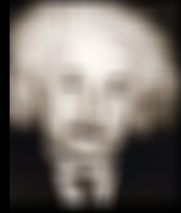
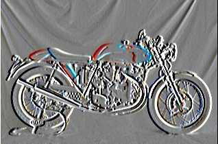
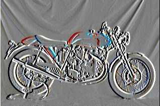

Project 1: Image Filtering and Hybrid Images
Hybrid Image of Dog and Cat
This assignment is about image filtering and making hybrid images. There are different approaches to achieve this goal. I will discuss briefly about the possibilities of each methods with complexity of algorithm. In bigger picture this assignment has two major sections:
- Section I: Image Filtering.
- Section II: Using Image filtering to produce Hybrid images.
- Part 1: Implementation of my_Imfilter function using Brute Force algorithm.
- Step 1.1: Implementation of padding function using Assigment and numpy pad.
- Step 1.2: For loop based approach to solve the convolution problem.
- Step 1.3: Making for loop efficient using numpy built-in functions .
- Step 1.4: Filtered Results.
- Part 2: Writing routine to generate Hybrid Images.
- Step 2.1: Implementation of 2-D gaussian filter.
- Step 2.2: Finding Low pass filtered images.
- Step 2.3: High-pass version of image using image subtraction.
- Step 2.4: Creating Hybrid Image using High and Low pass images
Part 1: Implementation of my_Imfilter function using Brute Force algorithm
In Part 1: When we convolve the image with filter, the output shape is different than input, and depends on shape of filter and stride. If we suppose we do not want to alter the stride and keep it 1 unit (step size of the filter while convolution) The output shape can be computed as:
-
out_shape = (input_height-filter_height+1, input_width-filter_width+1, n_channel)
-
out_shape = (256-3+1, 256-7+1, 3)= (254,252,3)
Step1.1: Implementation of padding function using assigment vs numpy pad
As convolving the image and filter reduces the output size to an extent defined by filter and step size. So, if we know the size of filter, we can pad input image so that when the filter reduces the output size it becomes equal to the original input (before padding). To conclude, to get the output of the same size as of input we need to pad the input before applying the filter. The padding can be adding rows and columns of zeros around the boundary of the image.
There are different ways of padding the image. Below I have discussed three of them:
- One can create a zero valued numpy array with required shape of input before the Convolution and update the aligned array out of already declared array with image shape.
- The other way is to use for loop to update the values for each pixel value. This will have more complexity as compared to previous method.
- There are other function like numpy padding, It takes multiple arguments, the one for our concern are the first two.
-
As first argument it takes the image array we need to pad, and the second argument is the array describing the padding dimension. For using this function, we need to define where to put the padding and how many rows and columns we need to add.
Before diving deep into the implementation, there are some keypoints that I want to highlight:
- We required to add even number of rows and column, (as the filter dimension are always odd giving m-1 and n-1 even).
- There is also a choice of selecting the value you want to pad with. The third argument in numpy pad serve this purpose. There are different modes you can select from by default it is on constant mode, you can also use the values at the edges as padding values.
- As convolution of image and filter doesn't affect the number of channel so while padding we will make sure not to pad the channels.
# height,width,channels
[h,w,c] = image.shape
# height, width a.k.a rows, columns
[m,n] = filter.shape
Step 1.1.1 Code Routine for Padding:Using for loop
#This routine takes almost 0.214 seconds to finish padding
padded = np.zeros((h+m-1,w+n-1,c))
for i in range(h):
for j in range(w):
for k in range(c):
padded[int(i+(m-1)/2),int(j+(n-1)/2),k]= image[i,j,k]
The above routine is not efficient, we can do it quickly using the below code.
Step 1.1.2 Code Routine for Padding: Using assignment
padded = np.zeros((h+m-1,w+n-1,c))
padded[m-2:-1,n-2:-1] = image
Even though this is very simplified version of the previous code it can still be improved. This method is more efficient for small sized images but not for excessively big images. Its time efficiency increases drastically with increase in size of the image. One can make it more efficient by not declaring a zero valued array instead just the one column and row which can be concatenated to the original images to form a padded image. In short, declaring numpy array of zeros is more costly.
Finally, I will talk about the finnest of all paddings I appraoched to. It just take approximately 0.001 seconds to pad the array.
Step 1.1.3 Code Routine for Padding: Using Numpy pad
padded = np.pad(image,((int((m-1)/2),int((m-1)/2)),(int((n-1)/2),int((n-1)/2)),(0,0)))
Step 1.2 : For loop based approach to solve the convolution problem
As we are unaware of the channels in the images, there can be 3 or just one (in case of gray scale) channel. The complexity of the algorithm depends on the number of channels alongside the size of the image and filter. If We use the “Brute Force” algorithm there will be four for loops in case of gray scale and five in case of colour image giving complexity of O(N^4) and O(N^5) respectively for gray and colour image.
Step 1.2.1 Code Routine for Convolution: Brute Force
out_image = np.zeros_like(image)
for i in range(h):
for j in range(w):
for k in range(c):
for a in range(m):
for b in range(n):
out_image[i,j,k] = out_image[i,j,k] + padded[i+a,j+b,k]*filter[a,b]
Brute Force Algorithm is very costly and takes high amount of time. We will implement different techniques to quickly solve the convolution problem. There are other ways to efficiently implement this algorithm we will implement it using numpy operations and see how it works.
Step 1.3: Making for loop efficient using numpy built-in functions
Step 1.2.2 Code Routine for Convolution: Brute Force Revised
filter = np.flipud(np.fliplr(filter))
# convolution output
out_image = np.zeros_like(image)
# Loop over every pixel of the image
for x in range(h):
for y in range(w):
for i in range(c):
# element-wise multiplication of the kernel and the image
out_image[x, y,i] = (np.multiply(filter,padded[x: x+n, y: y+m,i])).sum()
So, we implemented the above revise version of Brute force but using just three for loops increasing its efficiency to almost 10 times the code below performs computation in just 0.8 seconds. From 8.5 seconds to 0.8 is significance improvement.
Step 1.4 Filtered Results:
This demo will briefly describe the nature and effect of different filter and respective examples of given dataset. There are in total six filters described in the project including identity mapping filter, blurring filter with different size, also called averaging filter, edge detector, and Laplacian filter. Some of them are shown below with given name:

|

|
|  |

|

 



|

|
The first column has original images, and the rest are the filtered images from left to right they are small blurred, large blurred, sobel filtered, output of Laplacian filter, and high frequency part of the image.
Part 2: Writing routine to generate Hybrid Images.
The Part two is deploying image filtering mechanism to understand hybrid image concept. Hybrid image is an image which changes its interpretation with respect to distance from the image. It is made by low spatial frequency of one image and high passed version of another aligned image. There is parameter which can be tuned to decide how much to take from low passed image and how much to capture the details of high filtered image.
Step 2.1: Implementation of 2-D Gaussian filter and analysis of Cut-Off Frequency.
Gaussian filter in 1-D is straight forward but we need to align when it comes to 2-D filter. There are built-in functions in open-cv like getGaussianKernel which returns a 1D filter of k-size(input argument) and sigma (cut-off frequency). One can consider matrix multiplication to generate a 2-D filter from that. Below is the code to perform this operation:
Step 2.1 Code Routine for 2D Guassian filter: Using getGaussianKernel
cutoff_frequency = 7
filter = cv2.getGaussianKernel(ksize=cutoff_frequency*4+1,
sigma=cutoff_frequency)
filter = np.dot(filter, filter.T)
The problem with the above technique is it does not work for the filters with un even dimension. Suppose we want a filter with m*n size, we cannot achieve this dimension using the above filter, the above function only leads to m*m or n*n filter but not m*n. To solve this constraint, I designed custom code which does our job well. It is not very difficult to define a function that does the same thing but not involving any help from opencv and also it can have m*n dimensioned filter. Below code is the example code how we can implement a 2-D filter even with different row and column dimension.
Step 2.1 Code Routine for 2D Guassian filter: Using Custom defined function
import numpy as np
from matplotlib import cm
def getGaussianKernel(filter_shape=(3,3),sigma=2):
m,n = [(point-1.)/2. for point in filter_shape]
ygrid,xgrid = np.ogrid[-m:m+1,-n:n+1]
h = np.exp( -(xgrid*xgrid + ygrid*ygrid) / (2.*sigma*sigma) )
h[ h < np.finfo(h.dtype).eps*h.max() ] = 0
sumofh = h.sum()
if sumofh != 0:
h /= sumofh
return hBoth of the ways are pretty much equal in the performance comparison. The cut-off frequency can be adjusted using the input argument sigma in define function. Below table has some of the filters with different cut-off and the effect on the image.

|
The first row shows some of the filters for different cut-off, large blur in the image means there will be more information in high passed image. The second row shows the low pass output on dog image whereas the third row is the subtracted version of low pass image from its original part. The last row is the hybrid image of low and high pass resultant of two different but aligned images. So far, I have not discussed how can one extract high passed version of image and make hybrid image with combination of low passed image. In upcoming sub-sections I will disscuss the complete path way to hybrid image.
Step 2.2: Finding Low pass filtered images.


|

|
Step 2.3: High-pass version of image using image subtraction.


|
Step 2.4: Creating Hybrid Image using High and Low pass images
|
|

|
|
|
|
|
|
|
If we see the image from a close distance, we see approximately understandable shape for one of the objects. For the same image, if we observe from a far distance the appearance will seems to view like the other object, we mixed to make hybrid image. In general, if an image has more sharp objects it will have more high frequency part and for less sharp image, we will have less high frequency component.
To conclude, in hybrid images the low frequency part is more prominent from a far distance whereas the high frequency part of the image is more visible from a shorter distance. Which directs to this that humans can get better understanding of image with low frequency from a far distance and in case of high frequency information, the more short the distance is more clear the information will.
Reference:
[1] Oliva, Aude, Antonio Torralba, and Philippe G. Schyns. "Hybrid images." ACM Transactions on Graphics (TOG) 25.3 (2006): 527-532.
[2] Image Filtering: https://docs.opencv.org/master/d4/d86/group__imgproc__filter.html